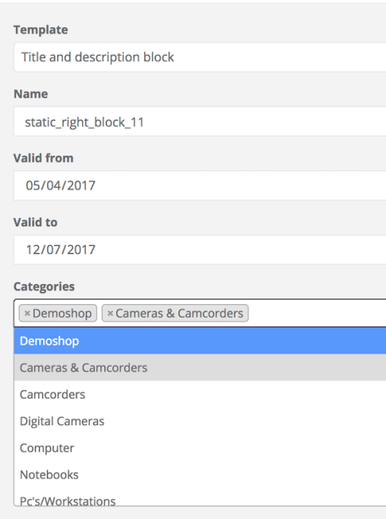
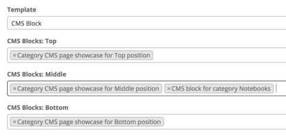

CMS Block Category Connector
Category Blocks
Category blocks are blocks that can be embedded into the category template, for which we can specify on which specific categories we want them to be rendered.
For example, we have a Christmas sale that affects the categories related to toys and sweets. We want to apply the following discount rule for these categories: "When you buy 3 products from this category, the product with the lower price is free".
We would like to promote this sale by placing a block that displays the discount rule on the affected categories only.
Installation
- Install CMS Block Category Connector module by composer. "spryker/cms-block-category-connector": "^2.0.0".
- Register the CMS block form plugin.
- Add the CmsBlockCategoryFormPlugin to the CMS Block GUI dependency provider (\Pyz\Zed\CmsBlockGui\CmsBlockGuiDependencyProvider).
<?php
namespace Pyz\Zed\CmsBlockGui;
use Spryker\Zed\CmsBlockCategoryConnector\Communication\Plugin\CmsBlockCategoryFormPlugin;
class CmsBlockGuiDependencyProvider extends CmsBlockGuiCmsBlockGuiDependencyProvider
{
/**
* @return array
*/
protected function getCmsBlockFormPlugins()
{
return = array_merge(parent::getCmsBlockFormPluginsq(), [
new CmsBlockCategoryFormPlugin(),
]);
}
}
- Register the CMS block form the handler plugin.
Add the CmsBlockCategoryConnectorUpdatePlugin to the CMS Block dependency provider (Pyz\Zed\CmsBlock\CmsBlockDependencyProvider).
<?php
namespace Pyz\Zed\CmsBlock;
use Spryker\Zed\CmsBlockCategoryConnector\Communication\Plugin\CmsBlockCategoryConnectorUpdatePlugin;
class CmsBlockDependencyProvider extends CmsBlockCmsBlockDependencyProvider
{
protected function getCmsBlockUpdatePlugins()
{
return array_merge(parent::getCmsBlockUpdatePlugins(), [
new CmsBlockCategoryConnectorUpdatePlugin()
]);
}
}
- Register collector plugin: add the CmsBlockCategoryConnectorCollectorPlugin to the Collector dependency provider (\Pyz\Zed\Collector\CollectorDependencyProvider).
<?php
namespace Pyz\Zed\Collector;
...
class CollectorDependencyProvider extends SprykerCollectorDependencyProvider
{
public function provideBusinessLayerDependencies(Container $container)
{
...
$container[self::STORAGE_PLUGINS] = function (Container $container) {
return [
...
CmsBlockCategoryConnectorConstants::RESOURCE_TYPE_CMS_BLOCK_CATEGORY_CONNECTOR => new CmsBlockCategoryConnectorCollectorPlugin(),
];
};
}
}
- Register Category form and form handler plugins.
<?php
namespace Pyz\Zed\CmsBlockGui;
...
class CategoryDependencyProvider extends SprykerDependencyProvider
{
...
/**
* @return \Spryker\Zed\Category\Dependency\Plugin\CategoryRelationUpdatePluginInterface[]
*/
protected function getRelationUpdatePluginStack()
{
return array_merge(
[
...
new CategoryFormPlugin(),
],
parent::getRelationUpdatePluginStack()
);
}
/**
* @return array
*/
protected function getCategoryFormPlugins()
{
return array_merge(parent::getCategoryFormPlugins(), [
...
new CategoryFormPlugin()
]);
}
}
- Register the category list plugin (optional): To show which categories are assigned to a block on a block view page, add the CmsBlockCategoryListViewPlugin to the CMS Block GUI dependency provider.
<?php
namespace Pyz\Zed\CmsBlockGui;
...
class CmsBlockGuiDependencyProvider extends CmsBlockGuiCmsBlockGuiDependencyProvider
{
...
/**
* @return array
*/
protected function getCmsBlockViewPlugins()
{
return array_merge(parent::getCmsBlockViewPlugins(), [
new CmsBlockCategoryListViewPlugin(),
]);
}
}
Usage
Adding a template for the new block is done in the same way as for static blocks, see CMS Block.
Create a new Twig template under the src/Pyz/Yves/CmsBlock/Theme/default/template/ folder. We'll call it categorySale.twig and it will have the following structure :
<!-- CMS_BLOCK_PLACEHOLDER : "saleMessage" -->
<!-- CMS_BLOCK_PLACEHOLDER : "saleInterval" -->
<blockquote>
{{ spyCmsBlockPlaceholder('saleMessage') | raw }}
<footer>
{{ spyCmsBlockPlaceholder('saleInterval') | raw }}
</footer>
</blockquote>
To configure the block:
- In the Zed UI, go to the CMS section and navigate to the blocks section.
- Click Create CMS Block to create a new block.
- From the template drop-down, select the new template and name the new block.
- Set the "Category" and enter the category URL in the Category field.
While typing, the product search will offer suggestions from the product list.
View on a CMS Block edit page:

View on a Category edit page:

- Set the block to active to use it straight away.
- After clicking Save, you will be prompted to provide glossary keys for the placeholders included in the Twig template.
- Embed the block into the category page by adding the following code in the catalog.twig template:
{% if category is defined %}
{{ spyCmsBlock({category: category.id}) }}
{% endif %}
- To see the page in Yves, the client data storage (Redis) must be up-to-date. This is handled through cronjobs.
- To manually execute this step, run the collectors to update the frontend data storage:
vendor/bin/console collector:storage:export
To configure block positions:
Usually you don't want to change Twig templates for each block assignment, but still be able to manage CMS Blocks from Zed GUI. In this case we recommend to use positioning.
CMS Block positioning means that you can predefine some of the useful places in your Twig templates once and then manage your CMS Blocks based on relations to categories and position. For example you could define "header", "body", "footer" positions to manage your CMS Blocks in those places independently.
By default we provide the following positions: "Top", "Middle", "Bottom", but you can easily change them in the module configuration on a project level (put your extension of CmsBlockCategoryConnectorConfig with the replaced method getCmsBlockCategoryPositionList to Pyz\Zed\CmsBlockCategoryConnector\CmsBlockCategoryConnectorConfig as in the example below).
<?php
namespace Pyz\Zed\CmsBlockCategoryConnector;
...
class CmsBlockCategoryConnectorConfig extends SprykerCmsBlockCategoryConnectorConfig
{
const CMS_BLOCK_CATEGORY_POSITION_TOP = 'Top';
const CMS_BLOCK_CATEGORY_POSITION_MIDDLE = 'Middle';
const CMS_BLOCK_CATEGORY_POSITION_BOTTOM = 'Bottom';
/**
* @return array
*/
public function getCmsBlockCategoryPositionList()
{
return [
static::CMS_BLOCK_CATEGORY_POSITION_TOP,
static::CMS_BLOCK_CATEGORY_POSITION_MIDDLE,
static::CMS_BLOCK_CATEGORY_POSITION_BOTTOM,
];
}
}
Run position sync:
To update a list of positions for CMS Blocks on a category page, execute at least once the Spryker\Zed\CmsBlockCategoryConnector\Business\CmsBlockCategoryConnectorFacade::syncCmsBlockCategoryPosition() (e.g. on CMS Block Category importer)).
Now you can use the block with the specified position:
{{ spyCmsBlock({category: category.id, position: 'top'}) }}
Results:
After running the collectors you should be able to see the block only on the page for which you configured it to be shown.
Last review date: Aug 30, 2017